la mejor mamá del mundo Leonarda Carrasco Regules
ella es bonita, ella es valiente, ella es fuerte, ella es luchadora, ella es ...
Una gran madre, pues a pesar de todos nuerstros fallos nos sigues
queriendo y cuidando como si fueramos las mejores personas del mundo,
 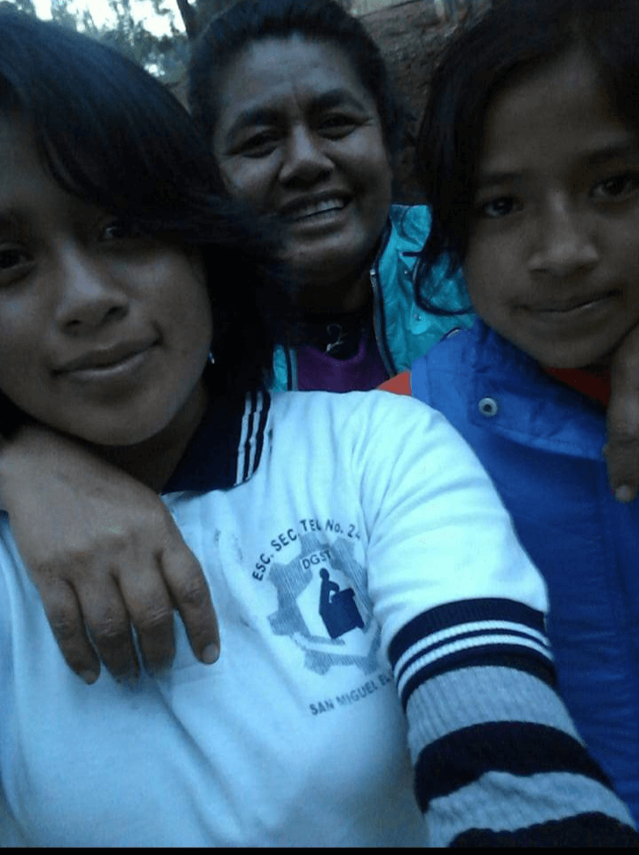
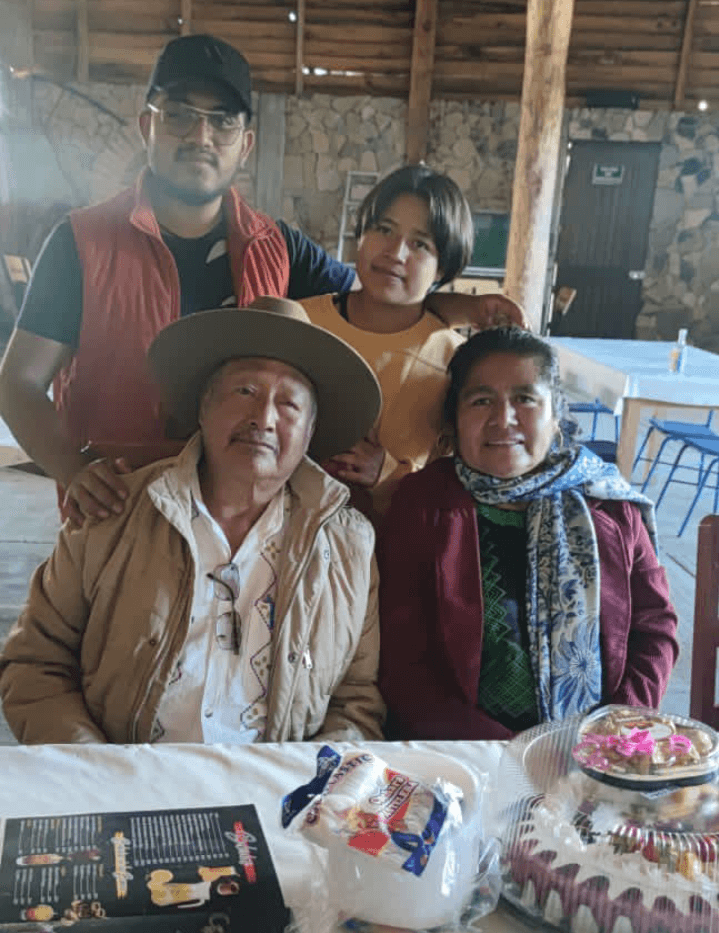
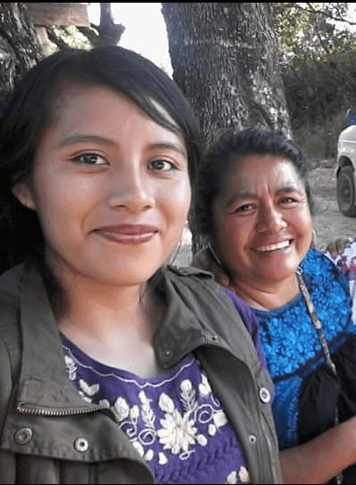
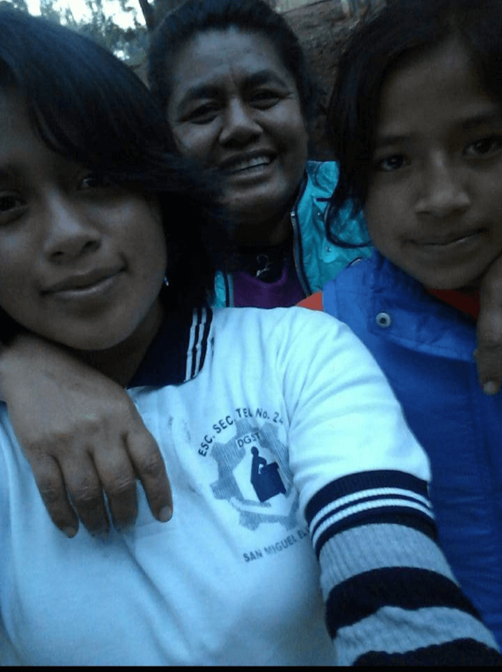
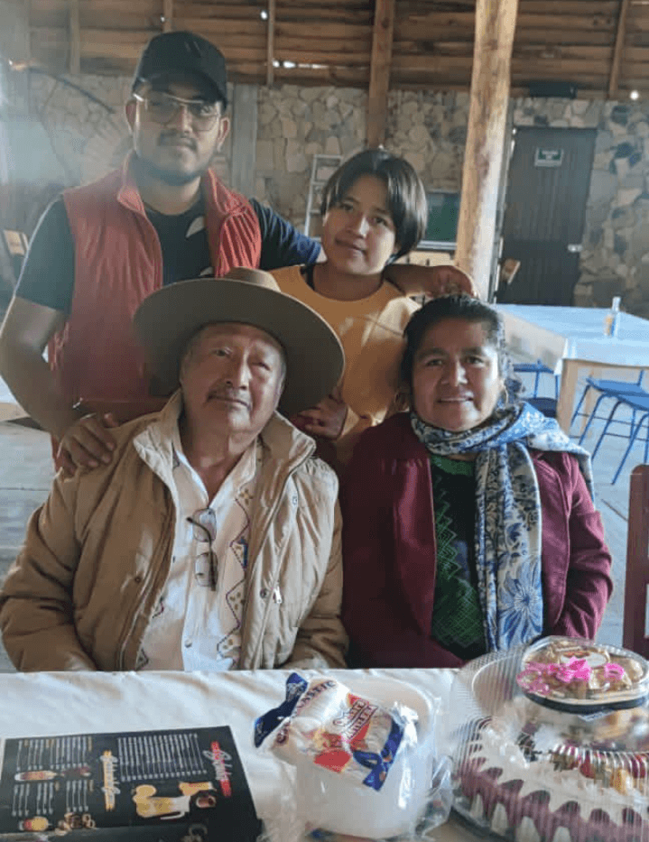
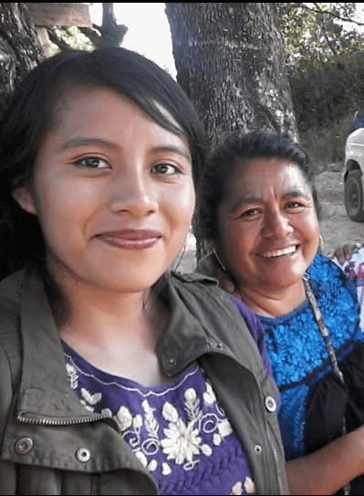
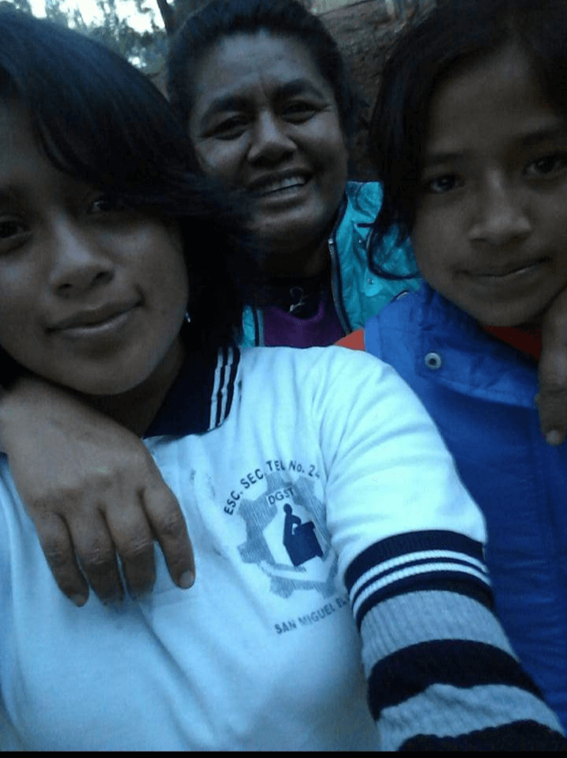
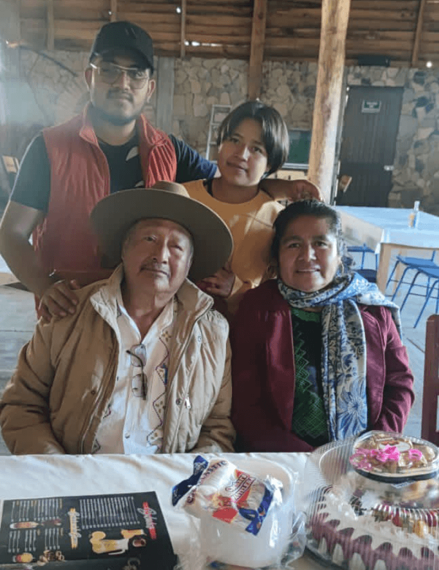
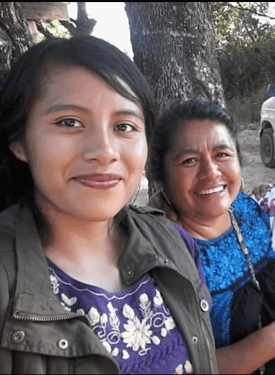
Una gran esposa pues a pesar de todo sigue apoyando y cuidando a mi señor padre
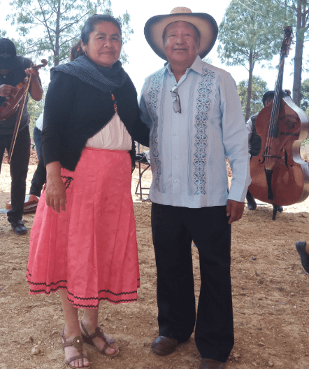
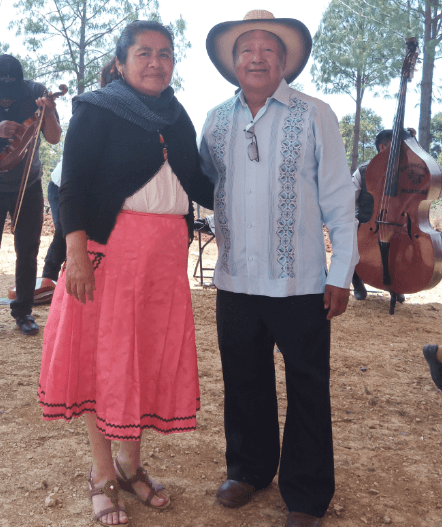
Una gran hija y hermana pues siempre apoyo y apoya a sus padres, cuido de sus hermanos,
guio y guía a ellos cuando se lo piden o lo necesitan. Cada que tiene la oportunidad sigue
apoyando a sus seres queridos, a sus seres amados y eso es algo admirable.
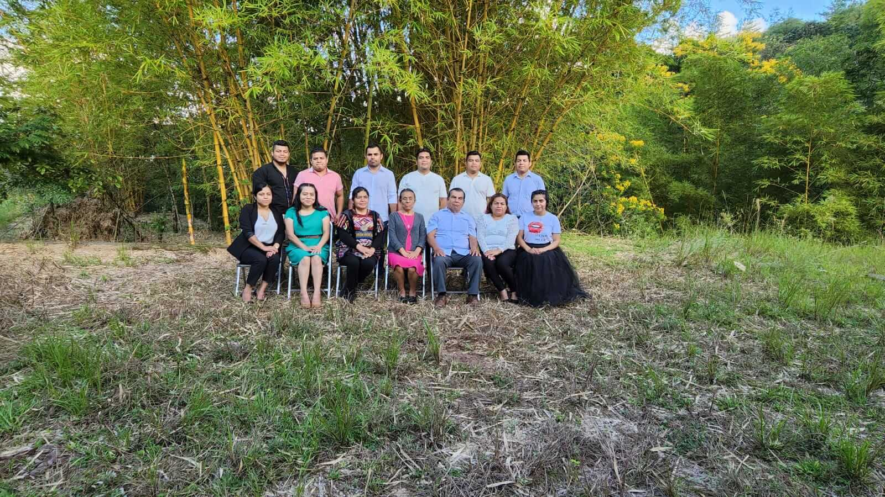
Usted es una gran mujer pues ha logrado grandes cosas en la vida y lo ha hecho con mucho esfuerzo y dedicación,
eres un ejemplo de fortaleza y tenacidad. Cada día te levantas y das tu mejor esfuerzo para sacar adelante
a tus hijos, a tu familia.Te admiro mucho porque a pesar de sentirte cansada eres capaz de seguir dando
lo mejor de ti por nosotros, no dejas que la adversidad te haga caer y ante lo imposible haces lo posible,
porque eres madre, tia, hermana, hija, maestra, ama de casa, campesina... un ser humano incrible. A ti que
haces con tus manos cosas maravillosas y con tu corazón cosas increíbles te deseo todo lo mejor en este mundo.
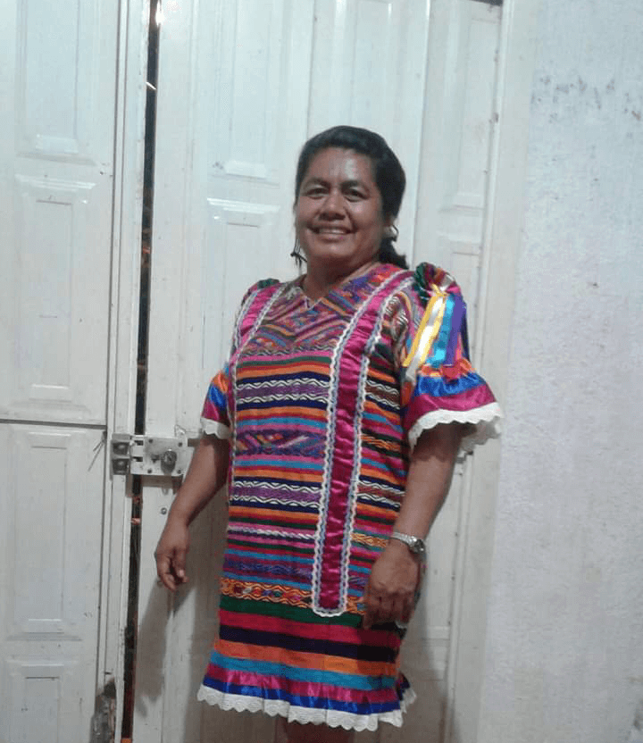 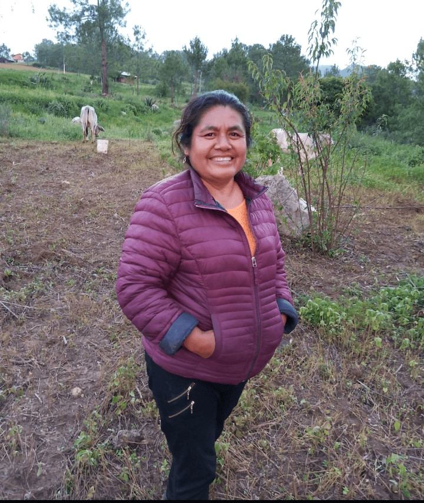 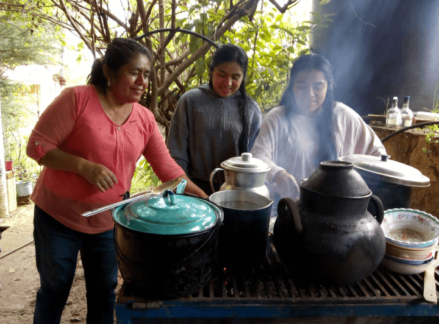
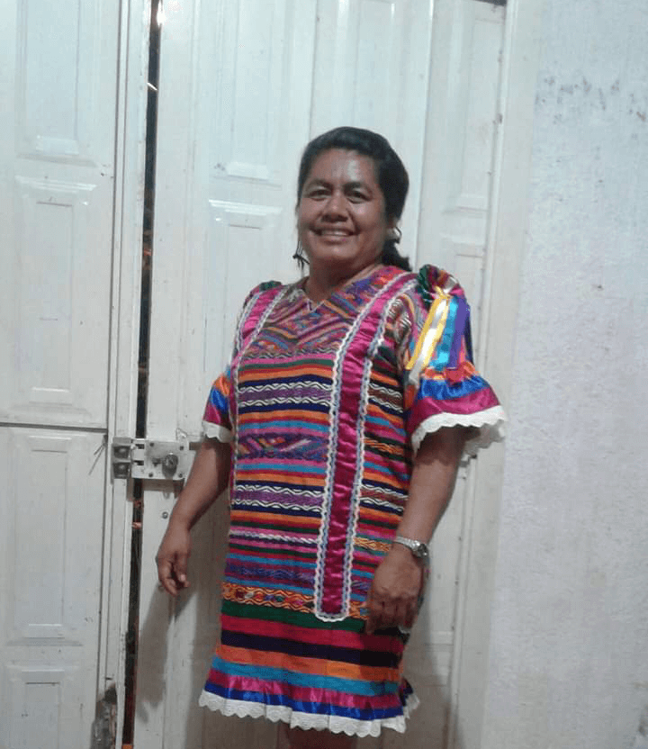 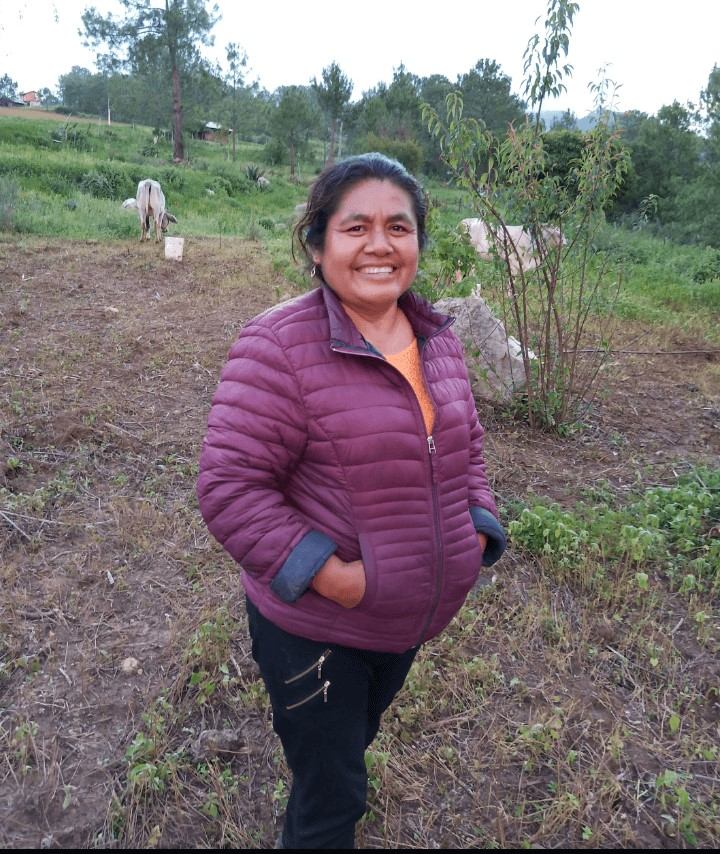 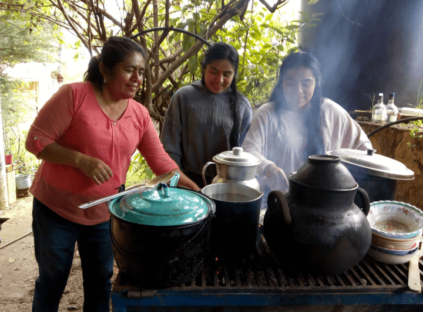
Te quiero un montón, que aunque no te lo demuestre, no sé que haría sin ti.Gracias por enseñarme, educarme y
mostrarme tu cariño cada día. Por ponernos a todos por delante de tus necesidades. Nunca sabre lo que siente
una madre, pero lo que si puedo sentir, es un orgullo inconmensurable de que seas la mia. Gracias por estar
siempre ahí, por apoyarme, ayudarme y quererme como yo te quiero y más. Cuidese mucho todos los dias, yo
me esforzare por hacerla sentir orgullosa, gracias por todos sus espuerzos. !FELIZ DIA DE LAS MADRES¡
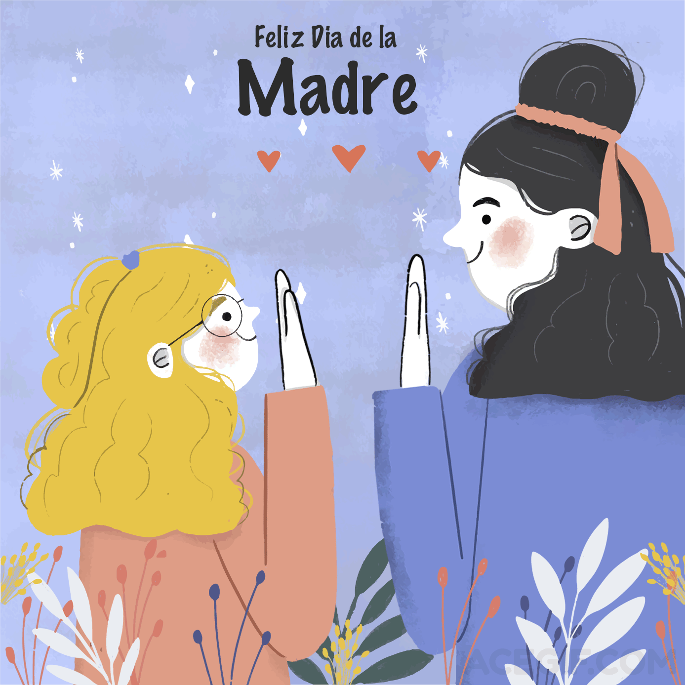